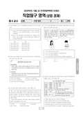

문제지


시험지를 먼저 풀어 보세요. 등급컷·표준점수·난이도는 흐리게 가려 뒀어요.
시험지를 먼저 풀어 보세요. 점수와 인원 수치는 흐리게 가려 뒀어요.
| 등급 | 표준점수 이상 | 인원(명) | 비율 |
|---|---|---|---|
| 1 | 69 | 29 | 4.78% |
| 2 | 63 | 47 | 7.74% |
| 3 | 58 | 71 | 11.7% |
| 4 | 52 | 102 | 16.8% |
| 5 | 46 | 124 | 20.43% |
| 6 | 42 | 99 | 16.31% |
| 7 | 39 | 86 | 14.17% |
| 8 | 36 | 28 | 4.61% |
| 9 | 30 | 21 | 3.46% |
시·도교육청 공개 자료
출처: 시·도교육청이 공개한 전국연합학력평가 성적 분석·통계자료(공개 자료 보기).
EBSi 응답자 기준으로 가장 많이 틀린 문항은 20번(3점)이고, 오답률은 58.3%입니다. 오답률 50%를 넘은 문항은 8개입니다.
| 순위 | 문항 | 배점 | 오답률 | 정답 | 많이 고른 오답 |
|---|---|---|---|---|---|
| 1 | 20번 | 3점 | 58.3% | ② | ③ 25% |
| 2 | 19번 | 3점 | 58.3% | ① | ③ 25% |
| 3 | 16번 | 3점 | 58.3% | ③ | ① 25% |
| 4 | 9번 | 3점 | 58.3% | ② | ③ 25% |
| 5 | 8번 | 2점 | 58.3% | ④ | ② 25% |
| 6 | 18번 | 2점 | 50% | ④ | ⑤ 41.7% |
| 7 | 12번 | 2점 | 50% | ④ | ① 33.3% |
| 8 | 7번 | 3점 | 50% | ⑤ | ② 16.7% |
| 9 | 17번 | 3점 | 41.7% | ⑤ | ① 25% |
| 10 | 3번 | 2점 | 41.7% | ③ | ① 16.7% |
| 11 | 11번 | 3점 | 33.3% | ③ | ① 16.7% |
| 12 | 5번 | 2점 | 33.3% | ⑤ | ③ 16.7% |
| 13 | 15번 | 3점 | 25% | ④ | ② 16.7% |
| 14 | 14번 | 2점 | 25% | ① | ③ 16.7% |
| 15 | 13번 | 3점 | 25% | ② | ⑤ 16.7% |
EBSi 가채점 응답자 기준 · 전 문항 중 오답률 상위 15문항
출처: EBSi 역대 등급컷·오답률 공개 화면. 가채점에 참여한 EBSi 이용자 응답이라 전체 응시자 정답률과는 다를 수 있습니다.
발행 기관: 시·도교육청(전국연합학력평가). 파일 위치: 이 사이트가 보관한 사본. 저작권은 발행 기관에 있습니다. 원본과 다르거나 게시 중단이 필요하면 연락처로 알려 주세요. 등급컷 출처 구분은 데이터 원칙에서 설명합니다.